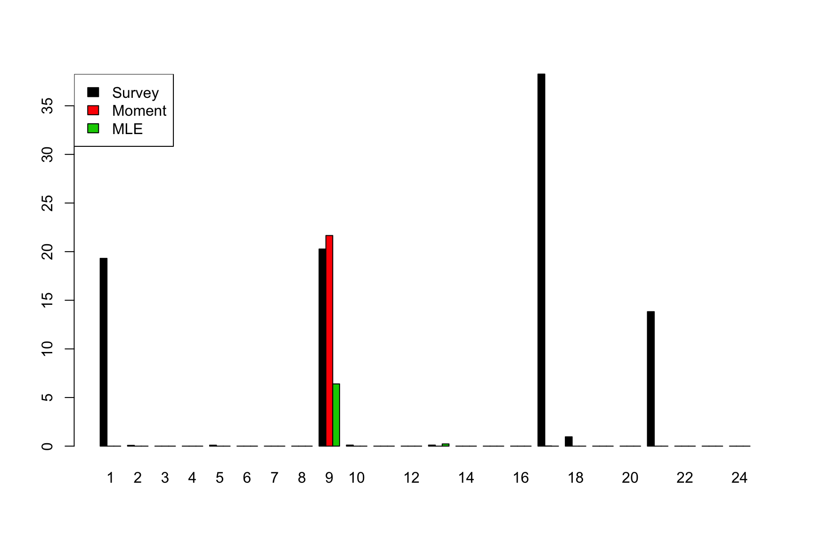
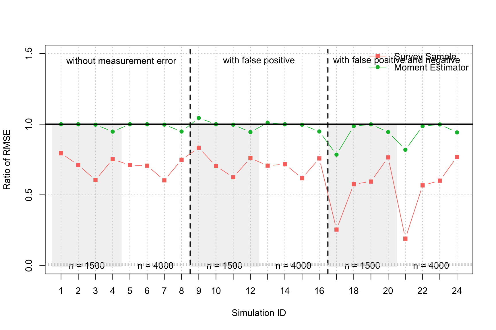

simu1.Rmd# Load package library(CPreval) # Number of Monte-Carlo simulations B = 10^4 # Initial simulation seed seed = 1832 # Simulation settings simu = data.frame(Simulation = 1:24, p0 = 100*rep(c(2/1000, 20/1000, 150/1000, 500/1000), 6), pi0 = 100*rep(c(1/1000, 10/1000, 100/1000, 300/1000), 6), n = rep(c(rep(1500, 4), rep(15000, 4)), 3), alpha = 100*c(rep(0, 8), rep(0, 8), rep(0.01,8)), beta = 100*c(rep(0, 8), rep(0.02,8), rep(0.02,8))) # Print table kable(simu, col.names = c("Simulation ID", "$p_0$ (%)", "$\\pi_0$ (%)", "Sample size $n$", "$\\alpha_0 = \\alpha$ (%)", "$\\beta_0 = \\beta$ (%)")) %>% kable_styling(bootstrap_options = c("striped", "hover"))
| Simulation ID | \(p_0\) (%) | \(\pi_0\) (%) | Sample size \(n\) | \(\alpha_0 = \alpha\) (%) | \(\beta_0 = \beta\) (%) |
|---|---|---|---|---|---|
| 1 | 0.2 | 0.1 | 1500 | 0 | 0 |
| 2 | 2.0 | 1.0 | 1500 | 0 | 0 |
| 3 | 15.0 | 10.0 | 1500 | 0 | 0 |
| 4 | 50.0 | 30.0 | 1500 | 0 | 0 |
| 5 | 0.2 | 0.1 | 15000 | 0 | 0 |
| 6 | 2.0 | 1.0 | 15000 | 0 | 0 |
| 7 | 15.0 | 10.0 | 15000 | 0 | 0 |
| 8 | 50.0 | 30.0 | 15000 | 0 | 0 |
| 9 | 0.2 | 0.1 | 1500 | 0 | 2 |
| 10 | 2.0 | 1.0 | 1500 | 0 | 2 |
| 11 | 15.0 | 10.0 | 1500 | 0 | 2 |
| 12 | 50.0 | 30.0 | 1500 | 0 | 2 |
| 13 | 0.2 | 0.1 | 15000 | 0 | 2 |
| 14 | 2.0 | 1.0 | 15000 | 0 | 2 |
| 15 | 15.0 | 10.0 | 15000 | 0 | 2 |
| 16 | 50.0 | 30.0 | 15000 | 0 | 2 |
| 17 | 0.2 | 0.1 | 1500 | 1 | 2 |
| 18 | 2.0 | 1.0 | 1500 | 1 | 2 |
| 19 | 15.0 | 10.0 | 1500 | 1 | 2 |
| 20 | 50.0 | 30.0 | 1500 | 1 | 2 |
| 21 | 0.2 | 0.1 | 15000 | 1 | 2 |
| 22 | 2.0 | 1.0 | 15000 | 1 | 2 |
| 23 | 15.0 | 10.0 | 15000 | 1 | 2 |
| 24 | 50.0 | 30.0 | 15000 | 1 | 2 |
# Initialisation error_survey = boundary_survey = cov_survey = len_survey = error_moment = boundary_moment = error_mle = boundary_mle = matrix(NA, B, 24) # Start Monte-Carlo for (j in 1:24){ for (i in 1:B){ X = sim_Rs(p = simu$p0[j]/100, pi0 = simu$pi0[j]/100, n = simu$n[j], seed = seed + i, alpha0 = simu$alpha[j]/100, alpha = simu$alpha[j]/100, beta0 = simu$beta[j]/100, beta = simu$beta[j]/100) # Fit survey sample estimator survey = survey_sample(R = X$R, n = X$n, alpha = X$alpha, beta = X$beta, pi0 = X$pi0) # Estimation error error_survey[i,j] = survey$estimate - simu$p0[j]/100 # Boundary boundary_survey[i,j] = survey$boundary # Moment estimator moment = moment_estimator(R0 = X$R0, R = X$R, pi0 = X$pi0, n = X$n, alpha0 = X$alpha0, alpha = X$alpha, beta0 = X$beta0, beta = X$beta) # Estimation error error_moment[i,j] = moment$estimate - simu$p0[j]/100 # Boundary boundary_moment[i,j] = moment$boundary # MLE ml = mle(R0 = X$R0, R = X$R, pi0 = X$pi0, n = X$n, alpha0 = X$alpha0, alpha = X$alpha, beta0 = X$beta0, beta = X$beta) # Estimation error error_mle[i,j] = ml$estimate - simu$p0[j]/100 # Boundary boundary_mle[i,j] = ml$boundary } }
# Simulation settings boundary = data.frame(Simulation = 1:24, survey = apply(boundary_survey, 2, mean), moment = apply(boundary_moment, 2, mean), mle = apply(boundary_mle, 2, mean)) # Print table kable(boundary) %>% kable_styling(bootstrap_options = c("striped", "hover"))
| Simulation | survey | moment | mle |
|---|---|---|---|
| 1 | 0.1931 | 0.0000 | 0.0000 |
| 2 | 0.0008 | 0.0000 | 0.0000 |
| 3 | 0.0000 | 0.0000 | 0.0000 |
| 4 | 0.0000 | 0.0000 | 0.0000 |
| 5 | 0.0010 | 0.0000 | 0.0000 |
| 6 | 0.0000 | 0.0000 | 0.0000 |
| 7 | 0.0000 | 0.0000 | 0.0000 |
| 8 | 0.0000 | 0.0000 | 0.0000 |
| 9 | 0.2027 | 0.2166 | 0.0640 |
| 10 | 0.0011 | 0.0000 | 0.0000 |
| 11 | 0.0000 | 0.0000 | 0.0000 |
| 12 | 0.0000 | 0.0000 | 0.0000 |
| 13 | 0.0011 | 0.0000 | 0.0023 |
| 14 | 0.0000 | 0.0000 | 0.0000 |
| 15 | 0.0000 | 0.0000 | 0.0000 |
| 16 | 0.0000 | 0.0000 | 0.0000 |
| 17 | 0.3826 | 0.0002 | 0.0000 |
| 18 | 0.0096 | 0.0000 | 0.0000 |
| 19 | 0.0000 | 0.0000 | 0.0000 |
| 20 | 0.0000 | 0.0000 | 0.0000 |
| 21 | 0.1383 | 0.0000 | 0.0000 |
| 22 | 0.0000 | 0.0000 | 0.0000 |
| 23 | 0.0000 | 0.0000 | 0.0000 |
| 24 | 0.0000 | 0.0000 | 0.0000 |
A = 100*t(as.matrix(boundary[,2:4])) colnames(A) = as.character(1:24) barplot(A, beside = TRUE, col = 1:3) legend("topleft", c("Survey", "Moment", "MLE"), fill = 1:3)

RMSE = function(x) sqrt(mean(x)^2 + var(x)) nb_settings = tail(simu$Simulation, n=1) cols = hcl(h = seq(15, 375, length = 4), l = 65, c = 100)[1:3] rmse_survey = apply(error_survey, 2, RMSE) rmse_moment = apply(error_moment, 2, RMSE) rmse_mle = apply(error_mle, 2, RMSE) plot(NA, xlim = c(1,nb_settings), ylim = c(0, 1.5), xlab = "Simulation ID", ylab = "Ratio of RMSE", axes = FALSE) rect(0.5, -0.01, 4.5, 1, col = "grey95", border = "grey95") rect(8.5, -0.01, 12.5, 1, col = "grey95", border = "grey95") rect(16.5, -0.01, 20.5, 1, col = "grey95", border = "grey95") text(2.5, 0.0005, "n = 1500") text(6.5, 0.0005, "n = 4000") text(10.5, 0.0005, "n = 1500") text(14.5, 0.0005, "n = 4000") text(18.5, 0.0005, "n = 1500") text(22.5, 0.0005, "n = 4000") text(4.5, 1.45, "without measurement error") text(12.5, 1.45, "with false positive") text(20.5, 1.45, "with false positive and negative") abline(v = 8.5, lwd = 2, lty = 2) abline(v = 16.5, lwd = 2, lty = 2) axis(1, 1:nb_settings) axis(2) grid() abline(v = 1:nb_settings, col = "grey80", lty = 3) abline(h = (0:3)*0.005, col = "grey80", lty = 3) box() abline(h = 1, lwd = 2) lines(1:nb_settings, rmse_mle/rmse_survey, col = cols[1], pch = 15, type = "b") lines(1:nb_settings, rmse_mle/rmse_moment, col = cols[2], pch = 16, type = "b") abline(h = 1, lwd = 2) legend("topright", c("Survey Sample", "Moment Estimator"), col = cols[1:2], pch = c(15, 16), lwd = 1, bty = "n")
